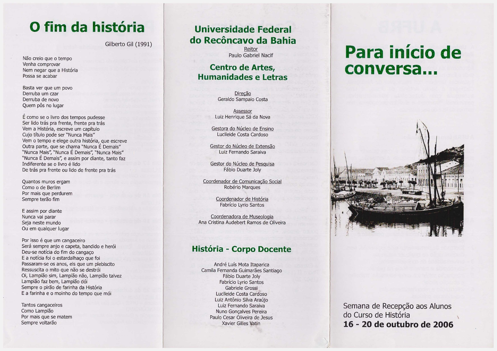

A recepção aos alunos registra a graduação no contexto de implantação da recém-criada UFRB.
Um documento fundador
“Para início de conversa...”
Entre 16 e 20 de outubro de 2006, o Curso de História realizou sua Semana de Recepção aos Alunos. O folder produzido para a atividade é um dos primeiros registros hoje reunidos neste memorial e permite observar a graduação ainda em seus momentos iniciais de funcionamento.

O começo de uma conversa
O documento apresenta a Semana de Recepção aos Alunos do Curso de História, realizada de 16 a 20 de outubro de 2006. Além do título que dá identidade à atividade, o folder registra a estrutura inicial do Centro de Artes, Humanidades e Letras, a coordenação de História e o corpo docente daquele momento.
Visto vinte anos depois, “Para início de conversa...” ganha um significado particular. A expressão reapareceria na comemoração do primeiro decênio do curso, em 2016, e serve agora como uma das referências para a construção deste memorial.
O folder preserva nomes de gestores, coordenação e docentes, permitindo reconstruir parte da configuração institucional inicial.
O “início de conversa” de 2006 seria retomado dez anos depois como “continuando a conversa...”.